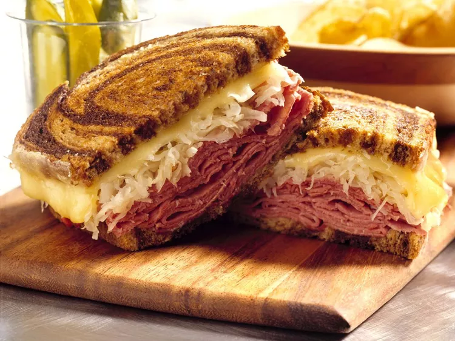

Reuben Sandwich

Description
A Reuben is a grilled sandwich featuring corned beef on rye bread.
The Reuben is a menu staple in Jewish-style delicatessens, but it's not technically kosher because it combines meat and cheese.
Ingredients
- 2 slices of Rye Bread
- 2 slices of deli-sliced corned-beef
- 2 slices of Swiss cheese
- ⅛ cup of Thousand Island dressing
- ¼ cup of sauerkraut, drained
- ½ tablespoons of butter, softened
Steps
(Quick Tip: Preheat a large griddle or skillet over medium-heat while you assemble your sandwich.)
- Spread one side of the 1st bread slice evenly with Thousand Island dressing.
- On that same slice, layer:
one slice of Swiss cheese, the corned beef, the sauerkraut,
your second slice of Swiss cheese, and your 2nd slice of bread.
- Spread half of the butter one end of the sandwich.
- Place the sandwich butter-side down on the preheated griddle; butter the top of the sandwich with the remaining butter.
- Grill until both sides are golden brown. About 5 minutes per side.
- Serve hot and enjoy.